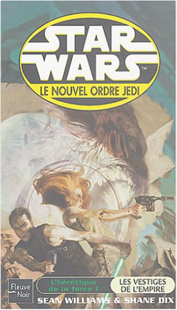

the picture of dorian grayoscar wilde  Experiments with the notion of sin as an element of design. This novel is a puzzle, intended to tease conventional minds with its exploration of the myriad interrelationships between art, life, and consequence. star wars, tome 62 : le nouvel ordre jedi, partie 11, l'hérétique de la force, partie 1, les vestiges de l'empiresean williams, shane dix  star wars, tome 63 : le nouvel ordre jedi, partie 11, l'hérétique de la force, partie 2, les réfugiéssean williams, shane dix star wars, tome 63 : le nouvel ordre jedi, partie 11, l'hérétique de la force, partie 2, les réfugiéssean williams, shane dix  star wars, tome 64 : le nouvel ordre jedi, partie 11, l'hérétique de la force, partie 3, réunionsean williams, shane dix star wars, tome 64 : le nouvel ordre jedi, partie 11, l'hérétique de la force, partie 3, réunionsean williams, shane dix  poppy pym et la malédiction du pharaonlaura wood poppy pym et la malédiction du pharaonlaura wood À 12 ans, Poppy Pym, orpheline, a toujours vécu dans un cirque. Pour son entrée en sixième, elle est envoyée à l'internat St Smithen. Pas vraiment le paradis, pour une fillette habituée à vivre parmi les acrobates et les musiciens !Quand sa nouvelle école organise une exposition d’antiquités égyptiennes, dont la pièce maîtresse est le rubis scarabée d'un pharaon que l’on dit maudit, Poppy est ravie. Voilà de quoi apporter un peu de piquant à cet établissement si strict ! Et lorsque des événements étranges et inquiétants se succèdent, Poppy pense que tout cela pourrait être lié au précieux rubis, et à la malédiction du pharaon !Heureusement, la vie au cirque lui a appris quelques tours plutôt utiles. Et avec l’aide de ses deux nouveaux amis, Ingrid et Kip, elle compte bien résoudre ce mystère, à la manière des héros de ses romans policiers préférés. |


 Made with Delicious Library
Made with Delicious LibraryNancy, State zipflap congrotus delicious library Thomas, Julien